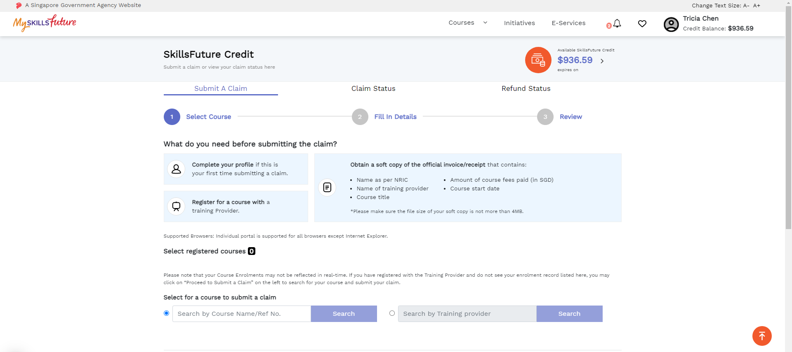
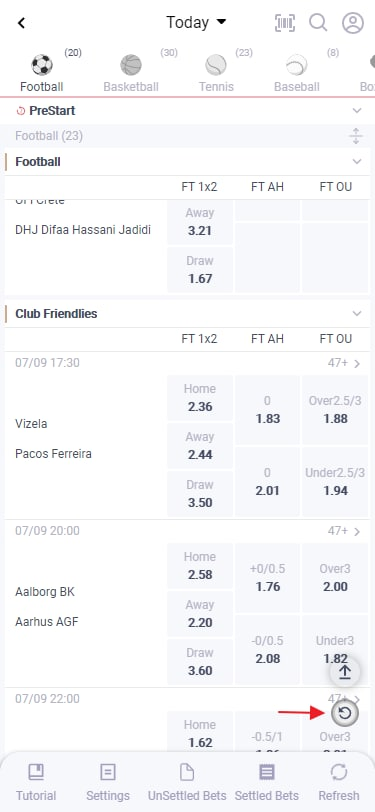
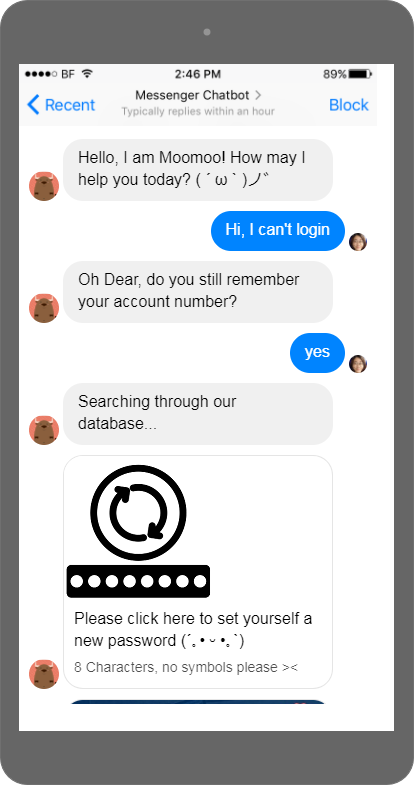

Summary
Business Analyst with 5 years of experience,
having also dabbled in Customer Service,
Marketing and Product Ownership.
Education
Singapore Management University
BSc Information Systems Management
Second Major in Operations Management
Aug 2013 – Apr 2017
Nanyang Junior College
"A" Levels
Jan 2011 – Dec 2012
- H2 Biology, Math, Economics
- H1 Chemistry
Work Experience
Business Analyst

SkillsFuture Singapore
Apr 2022 – Present
- Manage SkillsFuture Credit internal, B2B and B2C channels
- Liaise with external vendor on queries, incidents and platform enhancements
- Kick starting and overseeing enhancements in response to new policies
- Reviewing quotations for enhancements for reasonableness
- Communicating requirements from business stakeholders to vendor
- Ensuring adherence to promised delivery timeline and business needs
- Approving UAT artefacts before deployment to PROD environment
- Assist and follow through ICT Audit to align SOPs and projects with
Business Analyst

Aonva Solutions Pte Ltd
Dec 2020 – Mar 2022
- Identify Personas and Use Cases for Internal and External platforms
- Enhance and Manage B2B platforms especially in areas of reporting and risk management
- Automation of operations processes to minimise manual work and human error
- Task prioritisation for projects across SG, Taiwan, Myanmar, Philippines teams on ÂGILE framework
- UI mock-up for platforms to convey requirements to developers in Taiwan
- UI prototyping for users before implementation of solutions
- UAT of new features before pushing it to live/production environment
- Communicate with Dev team in Taiwan daily in Mandarin and Traditional Chinese
- Analysis of existing process flows and proposing enhancements
- Creating and updating user guides for various B2B and B2C platforms
Business Analyst
Phillip Securities Pte Ltd
May 2018 – Nov 2020
- Oversee Internal and External platforms (POEMS Mercury)
- Identifying features to increase user base and collecting user feedback
- Task prioritisation for projects to SG, India, China, MY teams on ÂGILE framework
- UI mock-up for platforms to provide coders with clear directions
- UAT before new features are launched to end users
- Communication to stakeholders and facilitating new version releases
- Retrieving platform data from tableau for reporting and analysis
- Directing and curating marketing content for campaigns in google ads
- Conduct seminars for user education to new staff and sales personnel
Customer Experience Executive

Phillip Securities Pte Ltd
Jul 2017 – May 2018
- Developed Chatbot to service clients 24/7 and automate processes
- Diagramming of OCM, As-is and To-be processes
- Designed APIs for sending information to chatbot from backend servers
- Gained deep understanding of capabilities of Facebook Messenger and Dialogflow
- Collected business use cases from various stakeholders
- Continuous testing of chatbot to improve client engagement
- Handled client queries on trading platforms and products
- Created Wiki portal to facilitate sharing of information within department
- Escalation of complicated client cases to IT and relevant departments
Skills
- Programming: Java, html
- Photo editing: GIMP, PS
- Project management: JIRA, Trello
- Prototyping: Balsamiq, mockplus
- CRM: Salesforce
- Invoicing: Workday
- Languages: English, Chinese, Japanese (JLPT N2)
Certificates
- AWS Certified Cloud Practitioner
Hobbies|
Contact Me